“Colors are the deeds of light, its deeds and sufferings.” — Goethe, preface to the Theory of Colours
“If you gaze long into an abyss, the abyss also gazes into you.” — Nietzsche, Beyond Good and Evil §146
“Above all else show the data.” — Edward Tufte, The Visual Display of Quantitative Information
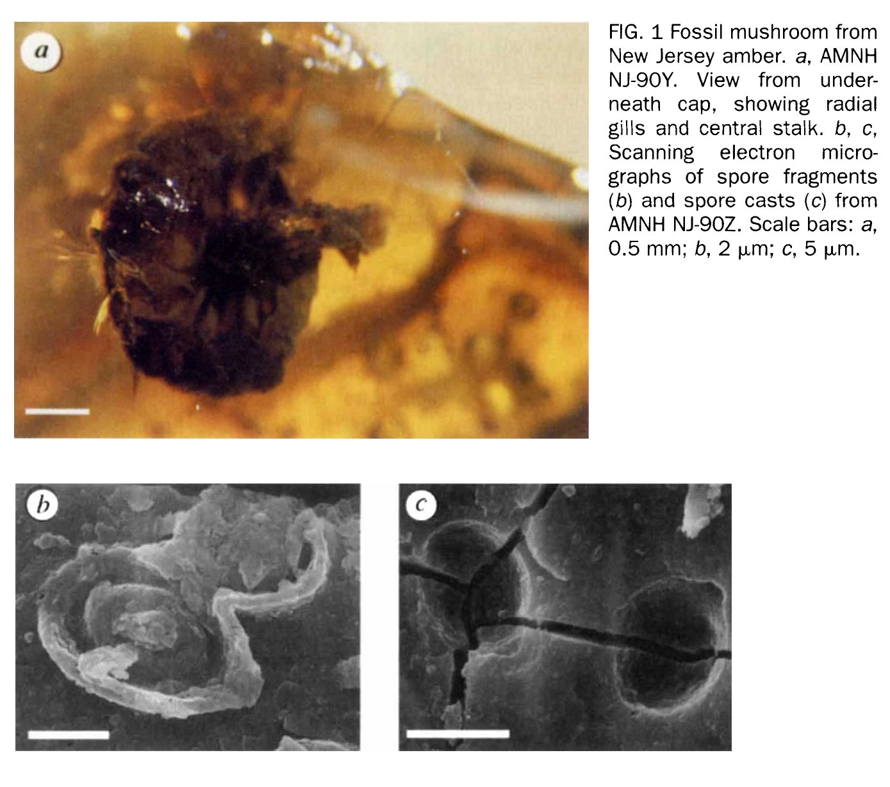
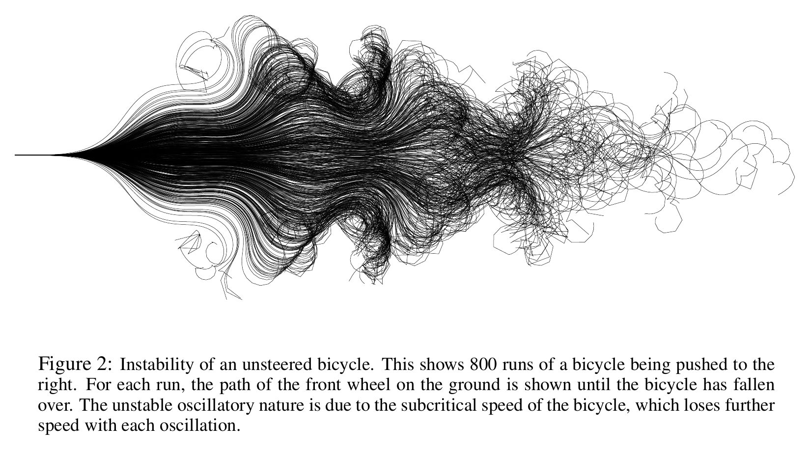
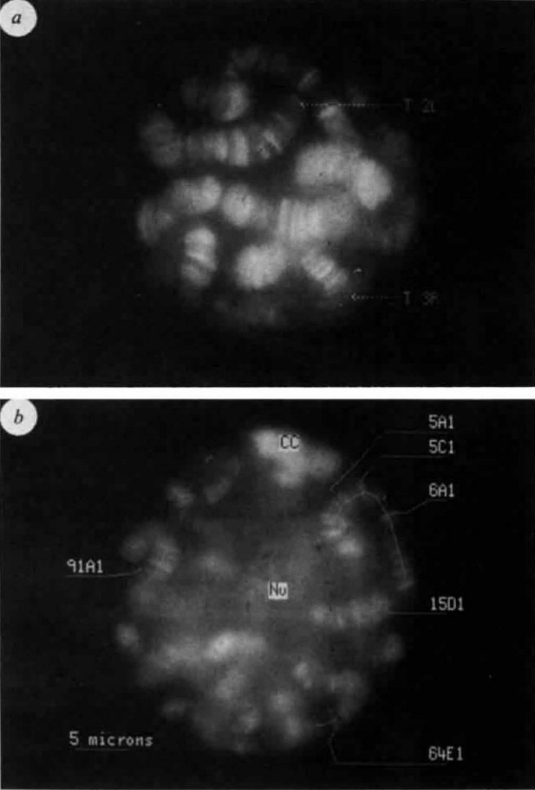
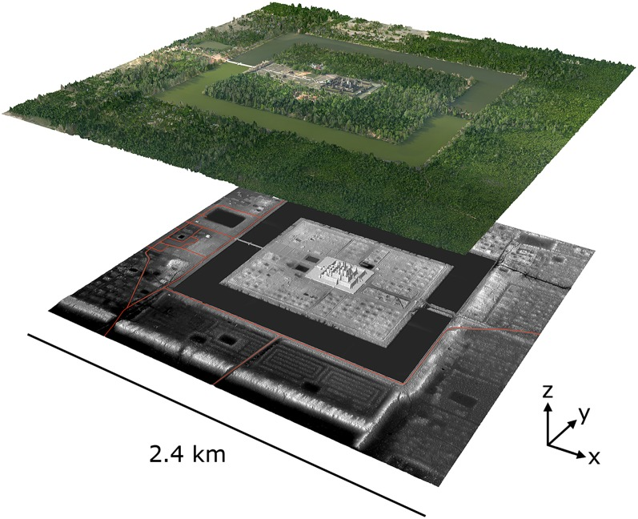
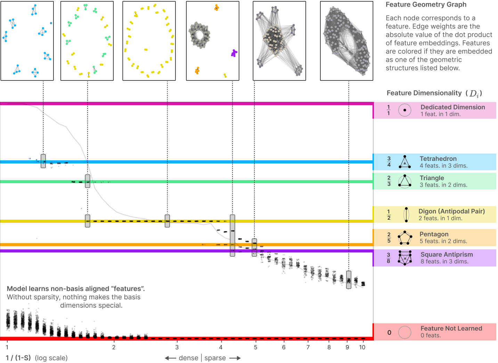
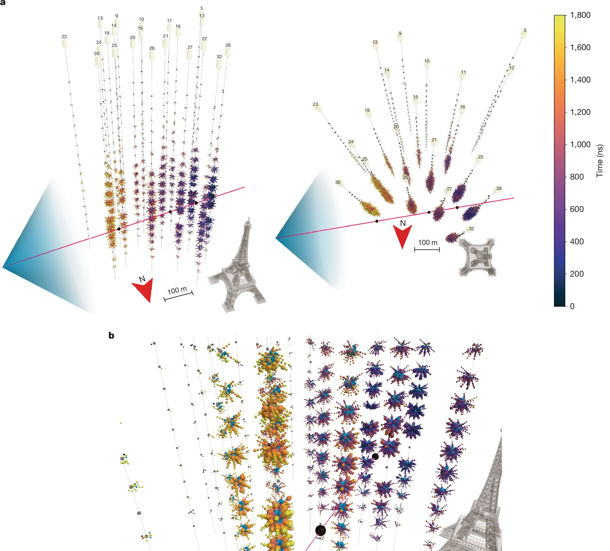
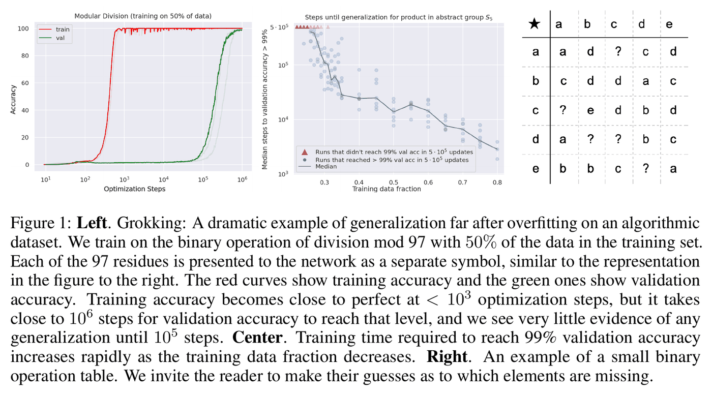
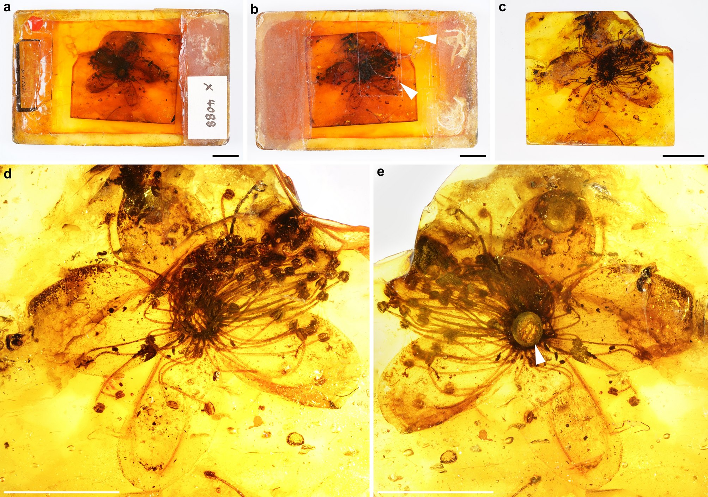
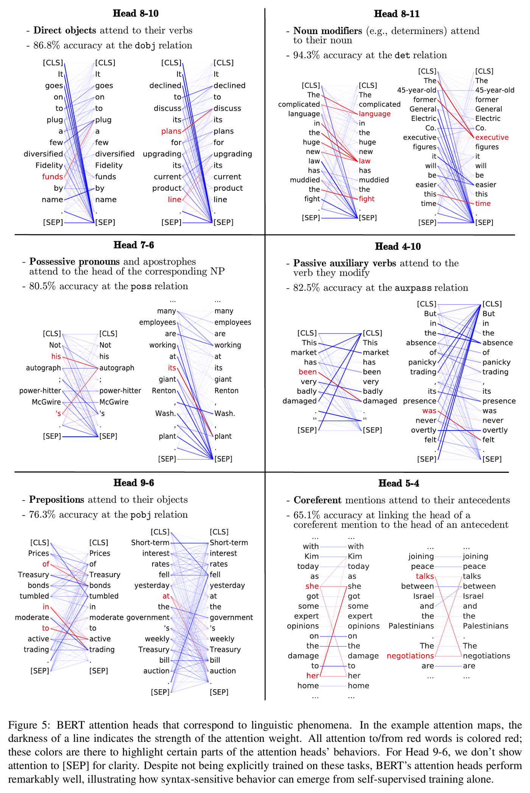
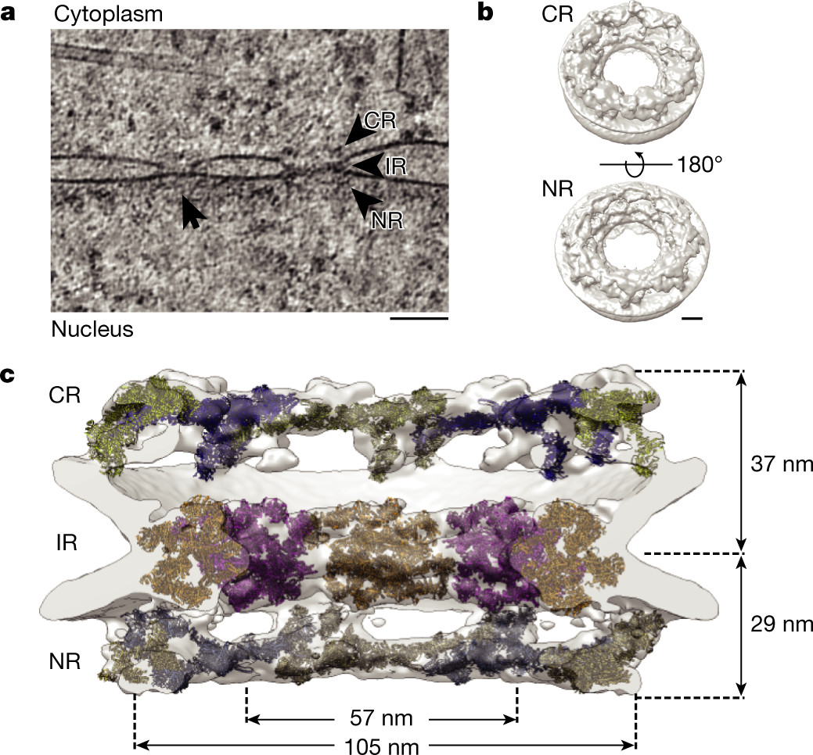
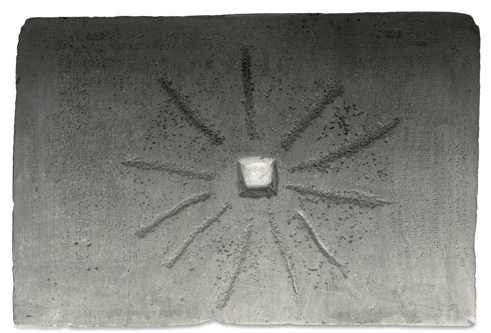
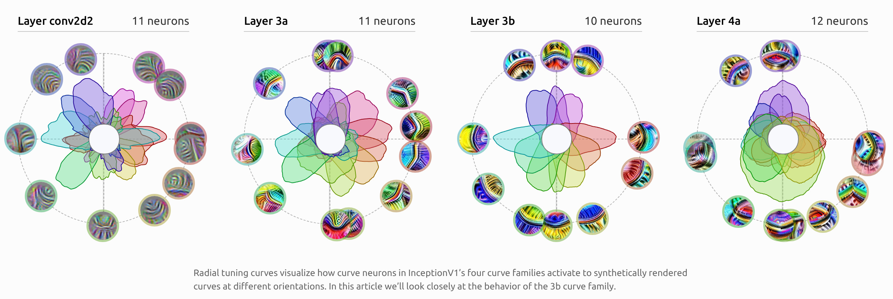
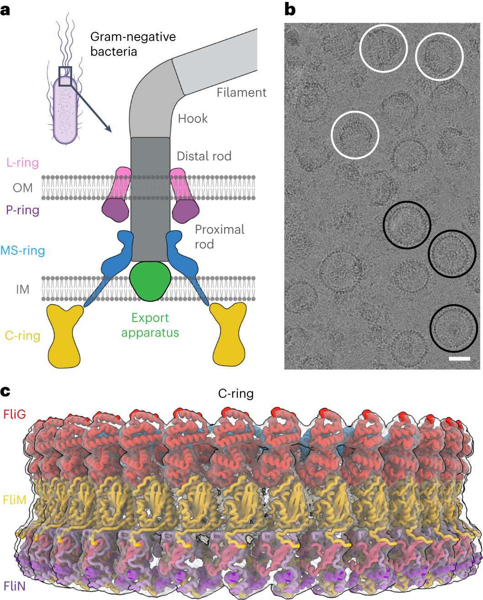
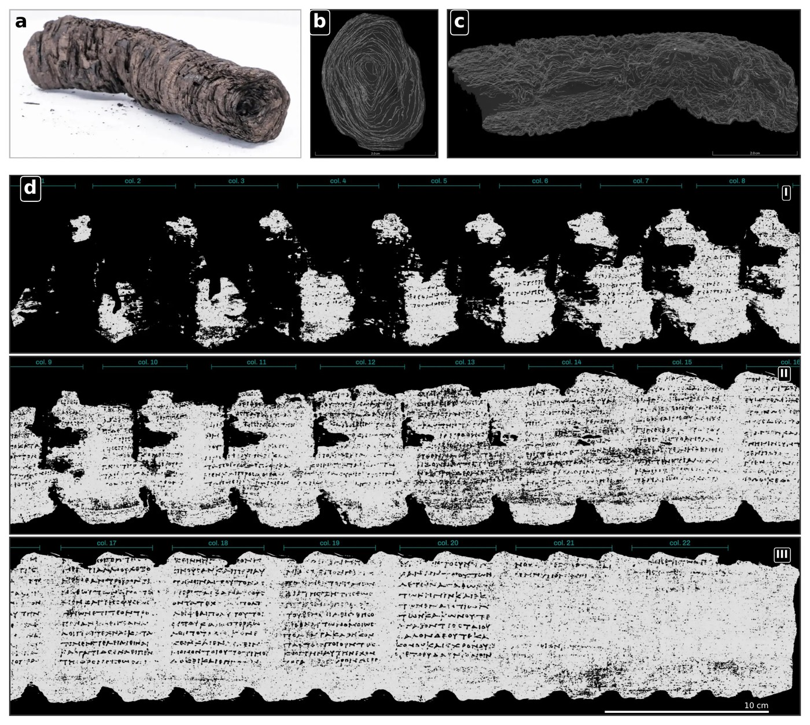
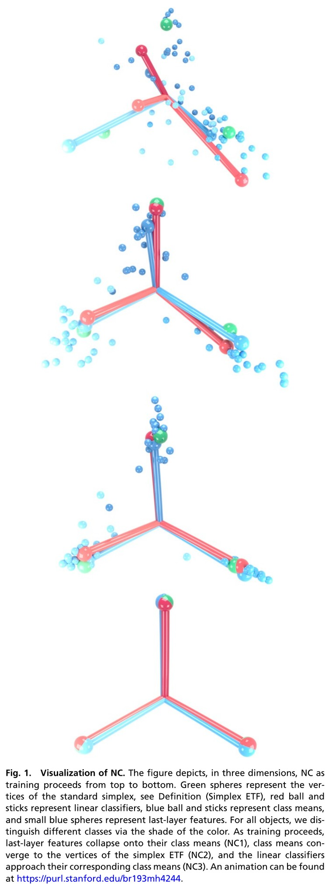
This primitive HTML site was built by a state-of-the-art language model.